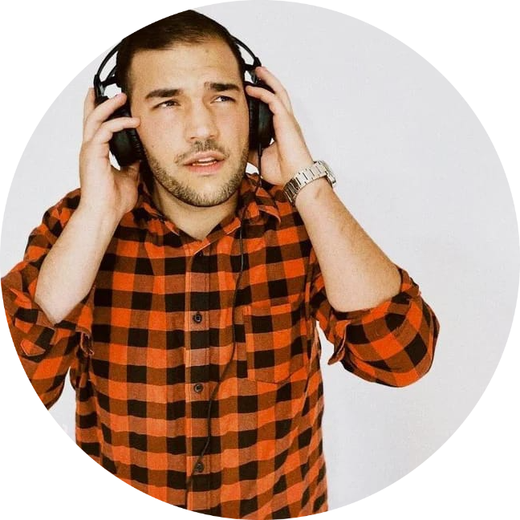
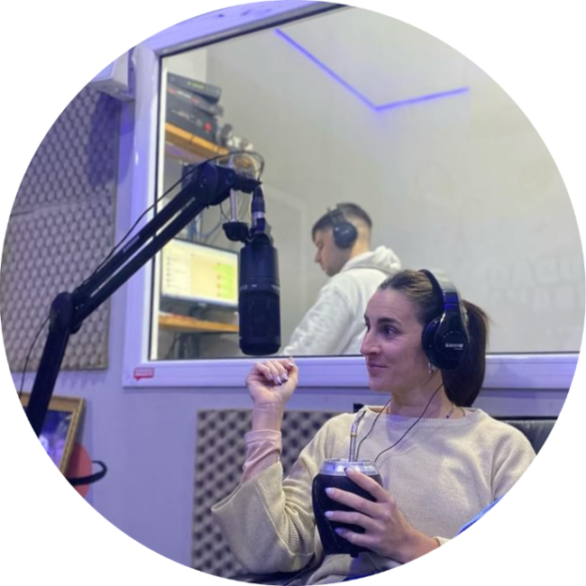
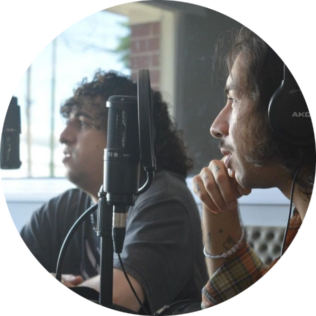

SUSCRIBETE
menu
NEWSLETTER
BENEFICIOS
NOSOTROS
Noticias
Newsletter
Beneficios
Nosotros
Únete

POLÍTICA URBANA
Andrés Noetzly nos cuenta toda la escena política en su contexto actual e histórico. Todos los Viernes.
CAFÉ FILOTÓPICO
Agustín Báez nos cuenta la historia, el desarrollo, la cultura, las costumbres del café y la comidita. De Ancona, nuestro lugar en el Mundo.

LITERATURA EN CONSTRUCCIÓN
Agostina Testa nos trae un mundo increíble. Recomendaciones, lecturas y conciencia social.
EL CLUB DE LA PELEA
Roberto Paz Maya y Suicidarce nos traen todas las recomendaciones del Cine.

IDENTIDAD BERISSENSE
Juan Martín Lucero nos recuerda por qué decimos «Soy de Berisso».
JUGANDO CON FUEGO
Carla Carranza rompe mitos y nos lleva a lugares que siempre evitamos. Salud Mental.
NUTRICIÓN POPULAR
Luli Martínez nos trae consejos, enseñanzas, tips y mucho más para descubrir el mundo de la nutrición saludable y popular.